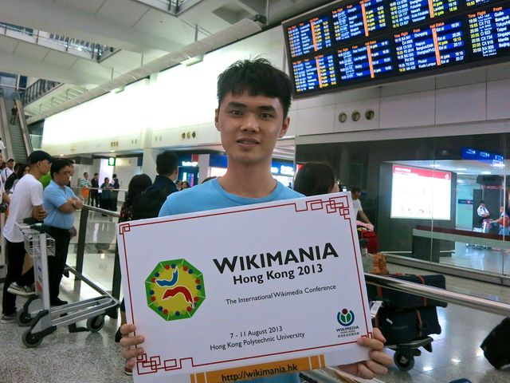
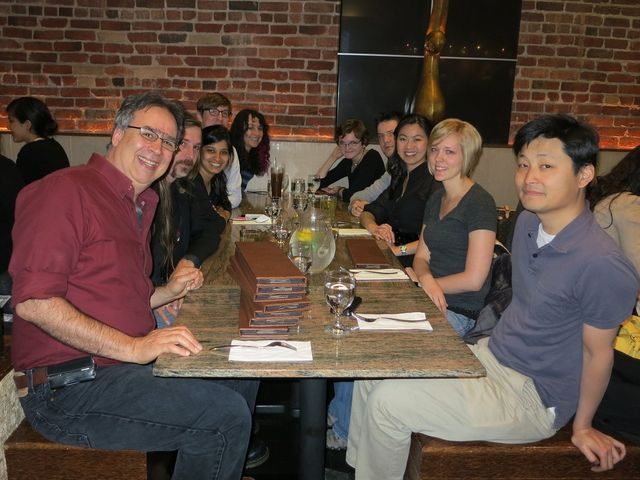

Trước khi vào bài
Hoạt động 1 · Mỗi ngày đi làm, bạn gặp những ai và nói gì với họ?

Gợi ý trả lời
I'm average height, I've got short dark hair, and I'll be holding a sign with your name on it.
Tôi cao tầm trung, tóc đen ngắn, và sẽ cầm tấm biển có tên anh.
I'm tall and well-built, and I'll be smartly dressed in a grey suit, so I should be easy to find.
Tôi cao, vạm vỡ, sẽ mặc bộ vest xám chỉn chu, nên chắc anh sẽ dễ nhận ra tôi.
I'm in my early thirties, short and slim, and I'll be wearing a bright yellow cap, so I'll stand out in the crowd.
Tôi ngoài ba mươi, người thấp, mảnh khảnh, và sẽ đội một chiếc mũ vàng rực, nên đứng giữa đám đông sẽ rất nổi bật.
Gợi ý trả lời
A good nurse has to be caring and patient, because older people in hospital are often tired and a bit frightened.
Điều dưỡng giỏi phải chu đáo và kiên nhẫn, vì các bác lớn tuổi nằm viện thường mệt mỏi và hay lo sợ.
The best nurses are warm and outgoing — they chat with patients and quickly put them at ease.
Những điều dưỡng giỏi nhất thường ấm áp, cởi mở — hay hỏi han các bác và chỉ một lúc là các bác thấy yên tâm.
She needs to keep calm under pressure and never lose her temper, even on a busy night shift.
Chị ấy phải luôn giữ được bình tĩnh lúc căng thẳng và không bao giờ nổi nóng, kể cả trong những ca đêm bận rộn.

Gợi ý trả lời
Would you like to come to our welcome party on Friday evening? It's a great chance to meet new people.
Tối thứ Sáu này bạn có muốn đến dự tiệc chào mừng của khoa không? Dịp tốt để làm quen với mọi người đấy.
The department is throwing a party for the new interns on Saturday — do you fancy joining us?
Thứ Bảy này khoa làm tiệc chào các bạn nội trú mới — bạn đi cùng bọn mình không?
I was wondering if you'd like to join our department dinner on Friday — it's a nice way to get together after a busy week.
Không biết anh có muốn dự bữa tối của khoa hôm thứ Sáu không — sau một tuần bận rộn, cả khoa ngồi lại với nhau cho vui.

Gợi ý trả lời
First, I ask where they work and what they specialise in — it's an easy way to start a conversation.
Đầu tiên tôi hỏi họ làm ở đâu, chuyên về mảng gì — bắt chuyện kiểu đó rất dễ.
I try to find out if we have a lot in common, like our hobbies, our home towns or the places we've worked.
Tôi thử tìm xem hai bên có nhiều điểm chung không, như sở thích, quê quán hay những nơi từng làm.
I talk about the conference itself, and if we get on well, we swap numbers so we can keep in touch.
Tôi hay nói chuyện về chính hội nghị, nếu thấy hợp nhau thì xin số điện thoại để giữ liên lạc.

Gợi ý trả lời
I really enjoy cooking for my family, and making dinner is my favourite way to unwind after work.
Tôi rất thích nấu ăn cho cả nhà; với tôi, nấu bữa tối là cách thư giãn sau giờ làm dễ chịu nhất.
I've just taken up photography, and on my days off I take my camera everywhere.
Tôi mới tập chơi ảnh, ngày nghỉ đi đâu cũng mang máy theo.
Honestly, I like a quiet life, so I spend my free time reading and growing plants on my balcony.
Nói thật là tôi thích sống yên tĩnh, nên thời gian rảnh tôi dành để đọc sách và trồng cây ngoài ban công.

Gợi ý trả lời
Wanted: a tidy, quiet non-smoker to share my flat near 103 Military Hospital.
Cần tìm một người ngăn nắp, ít ồn ào, không hút thuốc, ở ghép căn hộ gần Bệnh viện Quân y 103.
The room is available from 1 November, and the rent is three and a half million dong a month.
Phòng dọn vào được từ 1/11, tiền thuê ba triệu rưỡi một tháng.
It's within walking distance of the hospital. If you're interested, get in touch on Zalo before Sunday.
Căn hộ chỉ cách bệnh viện vài phút đi bộ. Bạn nào quan tâm thì liên lạc qua Zalo trước Chủ nhật nhé.
Hoạt động 2 · Bạn đã có bao nhiêu từ cho 6 nhóm?
What do the people you work with look like?
Gợi ý từ
have got · brown eyes · long hair · fair hair · tall · short · slim · average height · broad-shouldered · with short hair · short dark hair · curly · wavy · shoulder-length
What kind of person are you — and what are your colleagues like?
Gợi ý từ
a friendly person · independent · serious · (self-)confident · hard-working · tidy · rather shy · life is fun · like a quiet life · like new experiences and ideas · have lots of friends
What do you like doing when you're off duty?
Gợi ý từ
like · enjoy · don't like · don't enjoy · dancing · playing chess · going clubbing · rock music · computer games · jazz · pop music
What's your job now — and what would you like to do in the next five years?
Gợi ý từ
want to · would like to · I'd like to · go to Australia · run my own business · travel round the world · a holiday · a lift · a drink · a medical student · a final-year student · be a nurse · when I leave university
What do people write in a notice when they need a room or a lift?
Gợi ý từ
need a lift · haven't got transport · Would you like a lift? · share the cost of petrol · share a flat / house · pay up to £300 a month · near the campus · Come and see the room · Text or phone anytime · give your contact details · You must be a non-smoker · first-year / final-year student · Travel · Accommodation · Contacts
How do you invite a colleague out — and how do you say yes or no?
Gợi ý từ
Would you like to … with me this weekend? · Do you want to come with me? · Yes, that'd be great / fun / interesting. · Oh, sorry, I'm afraid I'm busy. · I'm afraid I can't. · No, thank you. · invite some friends to dinner · have a big party · try a new restaurant · celebrate your birthday · go to the cinema · meet new people